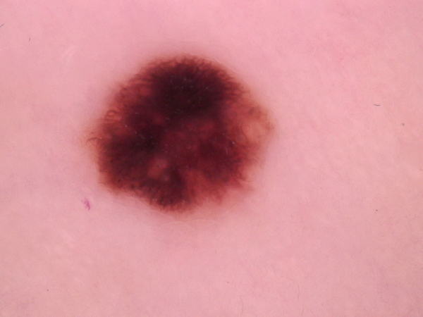
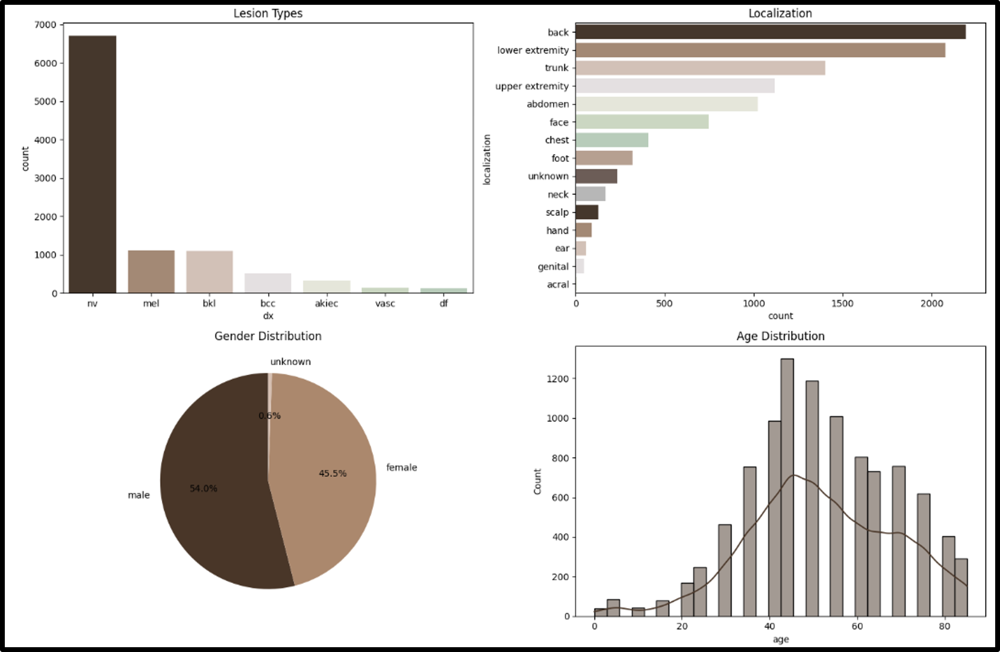
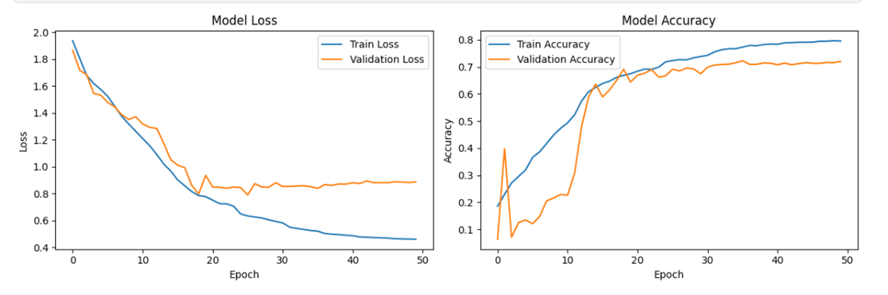

Skin Cancer Classification
A research-oriented multimodal skin-lesion classification prototype combining dermatoscopic imagery with tabular metadata across seven lesion classes.

The Problem
Skin-lesion classification from dermatoscopic imagery is challenging because visual differences between lesion types can be subtle, while the dataset itself contains substantial class imbalance. Additional context such as age, sex, and lesion localization can also provide information that is not directly visible in the image.
The Approach
- Analysis of the HAM10000 dataset containing 10,015 dermatoscopic images across seven lesion classes.
- Exploratory analysis of lesion type, age, sex, and anatomical localization distributions.
- Image preprocessing, augmentation, and class-imbalance handling to improve representation of minority classes.
- A CNN-based visual branch for extracting image features from dermatoscopic images.
- A separate metadata branch for tabular patient and lesion-related features.
- Multimodal feature fusion before the final lesion-class prediction layer.
- A Flask interface for image upload and prototype inference.
Technical Decisions
- Visual and tabular information were modeled together rather than relying on dermatoscopic imagery alone.
- Exploratory data analysis was used to identify severe class imbalance before model development.
- Data augmentation and resampling strategies were used to improve exposure to underrepresented lesion classes.
- The project is presented as a research and educational classification prototype rather than a clinically validated diagnostic system.
Results
The project produced an end-to-end multimodal classification workflow combining dermatoscopic imagery and structured metadata, from exploratory analysis and preprocessing through model training and prototype application integration.
Why It Matters
This project demonstrates how heterogeneous data modalities can be combined within a deep-learning pipeline. It also highlights practical challenges such as class imbalance, multimodal feature fusion, and careful evaluation in a sensitive medical-imaging domain.
Experimental Evidence
A representative dermatoscopic sample, dataset exploration, training diagnostics, and prototype demonstration provide a closer look at the data and development workflow behind the multimodal classification system.

Dermatoscopic Image Example
A representative dermatoscopic image from the HAM10000 dataset, illustrating the type of visual input used by the image branch of the multimodal classification model.

HAM10000 Dataset Exploration
Exploratory analysis of lesion-class frequencies, anatomical localization, sex distribution, and age distribution, highlighting the strong imbalance between lesion categories.

Model Training Behavior
Training and validation curves showing the evolution of classification loss and accuracy across training epochs.
Flask Prediction Interface
Demonstration of the Flask-based prototype workflow, from uploading a dermatoscopic image to generating a lesion-class prediction through the trained model.
Need a Similar Solution?
If your project involves image classification, computer vision, multimodal machine learning, or research-oriented AI prototyping, let’s discuss the problem and the right technical approach.